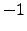

Next: user_generate_cuts_in_lp Up: LP module callbacks Previous: user_logical_fixing
int user_generate_column(void *user, int generate_what, int cutnum,
cut_data **cuts, int prevind, int nextind,
int *real_nextind, double *colval,
int *colind, int *collen, double *obj,
double *lb, double *ub)
This function is called when pricing out the columns that are not already fixed and are not explicitly represented in the matrix. Only the user knows the explicit description of these columns. When a missing variable need to be priced, the user is asked to provide the corresponding column. SYMPHONY scans through the known variables in the order of their user indices. After testing a variable in the matrix (prevind), SYMPHONY asks the user if there are any missing variables to be priced before the next variable in the matrix (nextind). If there are missing variables before nextind, the user has to supply the user index of the real next variable (real_nextind) along with the corresponding column. Occasionally SYMPHONY asks the user to simply supply the column corresponding to nextind. The generate_what flag is used for making a distinction between the two cases: in the former case it is set to GENERATE_REAL_NEXTIND and in the latter it is set to GENERATE_NEXTIND.
| void *user | IN | Pointer to the user-defined LP data structure. |
| int generate_what | IN | GENERATE_NEXTIND or GENERATE_REAL_NEXTIND (see description above). |
| int cutnum | IN | The number of added rows in the LP formulation (i.e., the total number of rows less the number of base constraints). This is the length of the **cuts array. |
| cut_data **cuts | IN | Description of the cuts corresponding to the added rows of the current LP formulation. The user is supposed to know about the cuts corresponding to the base constraints. |
| int prevind | IN | The last variable processed ( if there was none) by SYMPHONY. |
| int nextind | IN | The next variable ( if there are none) known to SYMPHONY. |
| int *real_nextind | OUT | Pointer to the user index of the next variable ( if there is none). |
| double *colval | OUT | Values of the nonzero entries in the column of the next variable. (Sufficient space is already allocated for this array.) |
| int *colind | OUT | Row indices of the nonzero entries in the column. (Sufficient space is already allocated for this array.) |
| int *collen | OUT | The length of the colval and colind arrays. |
| double *obj | OUT | Objective coefficient corresponding to the next variable. |
| double *lb | OUT | Lower bound of the next variable. |
| double *ub | OUT | Upper bound of the next variable. |
| USER_ERROR | Error. The LP process is aborted. |
| USER_SUCCESS | User filled out *real_nextind and generated its column if needed. |
| USER_DEFAULT | No column generation is done. |
colval, colind, collen and obj do not need to be filled out if real_nextind is the same as nextind and generate_what is GENERATE_REAL_NEXTIND.
Ted Ralphs